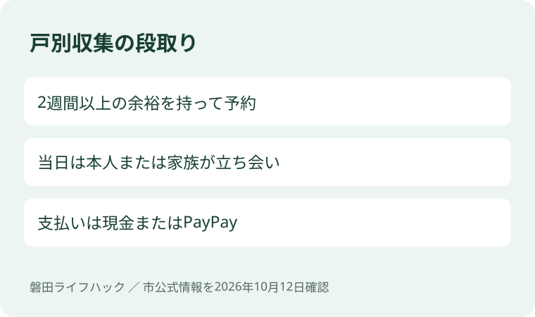
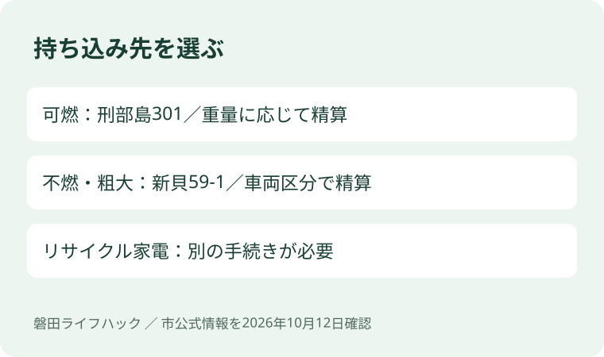

磐田市の粗大ごみ｜戸別収集と持ち込みの料金・手順
戸別収集は基本1,040円＋1点210円、予約と立ち会いが必要。可燃・不燃の持ち込み先、家電リサイクル対象品の扱いを分けて確認します。
訂正のお知らせ
旧記事の処理券購入、立ち会い不要、持ち込み先・受付時間に関する記載を訂正しました。戸別収集と可燃・不燃の持ち込みを分けて案内します。
2026年10月12日、下記の出典と照合して本文・図版を更新しました。
自宅での収集と、施設への持ち込みを分ける
粗大ごみを処分するときは「粗大ごみなら全部同じ」と考えず、材質、自分で運べるか、家電リサイクル対象かを先に確認してください。磐田市の戸別収集と、可燃・不燃それぞれの持ち込みでは、予約の要否も料金の計算方法も異なります。
戸別収集は予約と立ち会いが必要
戸別収集はLINEまたは電話で事前に申し込みます。希望日の少なくとも2週間前を目安に申し込み、混雑時には3週間〜1か月かかる場合があります。収集日は本人または家族の立ち会いが必要です。不在でも回収される前提で、外に出しておかないでください。
通常の対象品は基本料金1,040円と1点当たり210円です。支払いは現金またはPayPay。市の粗大ごみ処理券を店頭で購入するという旧記事の説明は誤りでした。申し込んでいない品を当日に追加することもできません。
品物は屋外へ、集合住宅では1階の収集可能な場所へ出しておきます。室内からの搬出には対応していません。通常の対象品は長さ2m・重さ80kg以内などの条件があり、1世帯につき月1回です。引っ越しや解体による大量ごみは対象外なので、別途相談が必要です。
家電リサイクル対象品の戸別収集は、基本料金1,040円と全収集物1点当たり210円に加え、対象家電1点当たり運搬料1,100円とリサイクル券が必要です。リサイクル券の準備を含めて市の案内を確認してください。「市の収集では一切扱わない」と一括りにせず、直接搬入の可否とも分けて考えます。
可燃ごみを持ち込む場合
木製家具や布団等の可燃ごみは磐田市クリーンセンター（刑部島301）へ。受付は平日8:30〜16:15、第2・第4日曜と対象の祝日は8:30〜12:45です。土曜の家庭ごみ持ち込みはできません。月別カレンダーと材質・寸法の条件を確認します。
可燃ごみの料金は10kg当たり157円で、計算後の10円未満は切り捨てです。支払いは現金のみです。金属やガラス等を外せない場合は不燃・粗大ごみの持ち込み先を確認してください。家電製品を可燃ごみに混ぜて運ぶことはできません。
不燃・粗大ごみを持ち込む場合
中遠広域粗大ごみ処理施設の所在地は磐田市新貝59-1。受付は平日の9:00〜12:00と13:00〜16:30で、土日祝・年末年始には持ち込めません。施設の休業日を出典ページで確認し、昼休みも避けて予定を組みます。
料金は積んだごみの重さではなく、搬入車両の最大積載量の区分によります。0.5トン以下520円、0.5トン超〜1トン1,040円、1トン超〜1.5トン1,570円、1.5トン超〜2トン2,090円です。家電リサイクル対象品はこの施設へ持ち込めません。
良い点と注文したい点
自分で運ぶ方法と予約して収集してもらう方法から選べるのは良い点です。一方、対象品や料金を省略した説明は誤解につながります。当サイトの案内にも誤りがあったため、支払い、立ち会い、受付日をそれぞれ明示する形に改めました。
対案・結論
品目、寸法、個数、材質をメモし、戸別収集の対象か、どちらの施設へ持ち込むかを確認してから予約・車の手配へ進みましょう。市公式の分別ガイドでも判断できない物は写真や寸法を手元に置いて相談すると、対象を伝えやすくなります。
大石の視点
引っ越しや実家整理では、退去日とごみの収集日が合うとは限りません。残す物の確認、家具の搬出、処分先への移動を別々の作業として予定に入れましょう。住宅の売却相談でも、処分方法を決める前に、家族の所有物や保管すべき書類を分けておくことをおすすめします。


参考にした公式情報
最終確認日：2026-10-12。臨時休止・受付状況は利用前に公式ページで確認してください。